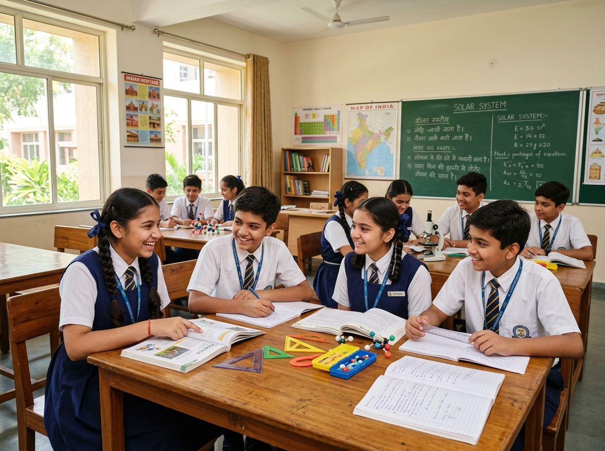

Academics Rooted in Values, Open to the World
The academic programme at Shree Mahalingeshwara Vidyanikethana follows the NCERT-guided curriculum, delivered under our affiliation with NIOS (National Institute of Open Schooling), New Delhi. The syllabus spans Grade 1 through Grade 8 — giving students a complete foundational and middle school education within a single, values-rooted campus.
But the curriculum here is more than a list of subjects. Every lesson, every activity, and every school day is shaped by the principle of "living in truth" — the idea that knowledge must be held together with character, and that what a child learns in the classroom should eventually serve the wider community.
The school draws on India's ancient philosophical traditions, its cultural legacy, and the wisdom of respected teachers worldwide. Students are introduced to lesser-known figures from Indian history, and given hands-on exposure to farming and the dignity of labour — so that learning stays connected to life, and life stays connected to learning. By the time a student completes Grade 8, they leave with a strong academic foundation, a formed character, and a clear sense of purpose.

What Students Learn
Classes I – IV
Classes V – VIII
The Panchangashikshan
Framework in Practice
Five streams run through every week of the academic calendar — from Grade 1 to Grade 8 — not as add-ons, but as the rhythm of the school day itself.
Yoga
Stillness, breath, and physical well-being.
Sports
Discipline, energy, and team spirit.
Music
Expression, rhythm, and creative confidence.
Sanskrit
Heritage, language, and ancient wisdom.
Naithik
Moral education and inner character.
How We Teach
The classroom here is a place of discovery — where the mind is engaged, the heart is formed, and the child is always at the centre, from Grade 1 through Grade 8.
Small, Attentive Classrooms
Classes are kept intentionally small so that every child receives personal attention — and no child is allowed to quietly fall behind, at any grade.
Learning by Doing
Concepts are introduced through activity, observation, and experience — so that understanding runs deeper than memory, from primary years through middle school.
Meditation Before Lessons
The school day begins with quiet meditation — a practice that settles the mind and prepares the child for focused learning, at every age.
Teachers as Mentors
Our teachers carry the kind of freedom a mother has — the freedom to nurture, to correct gently, and to guide each child with patience across the years.
Rooted in Indian Heritage
The curriculum draws on India's ancient philosophical traditions, its cultural legacy, and the lives of lesser-known figures from Indian history.
Dignity of Labour
Students receive hands-on exposure to farming and physical work — learning early that every form of honest effort deserves respect.
Classes & Assessment
A complete academic journey from Grade 1 to Grade 8 — with evaluation that supports learning rather than merely measuring it.
Classes Offered (Grade 1 – 8)
The school offers a continuous, structured programme from Grade 1 through Grade 8, following the NCERT-guided curriculum under NIOS affiliation. Admissions are open every January for the academic session beginning in June.
Examination & Evaluation
Evaluation at the school is continuous and supportive — designed to identify where a child needs help, and to celebrate where a child excels. It is never used to rank or compare, but to guide.
Assessment includes periodic written tests, oral evaluations, project work, and classroom participation. Equal weight is given to a student's progress in yoga, sports, music, and character formation — because a report card should reflect the whole child, not just the marks.
In Grade 6, 7, and 8, students are prepared with structured revision, practice tests, and one-to-one mentoring — building a strong academic base for higher studies. Parents receive regular feedback through parent-teacher meetings and written progress reports, so that school and home can work together in the child's interest.
Co-Curricular Activities
Learning does not stop at the classroom door. Every child — from Grade 1 to Grade 8 — is encouraged to explore, create, and grow beyond books.
Eight years of learning — from the first alphabet in Grade 1 to the completion of middle school in Grade 8 — designed not only to produce good students, but to shape good human beings who serve their community, their country, and humanity as a whole.